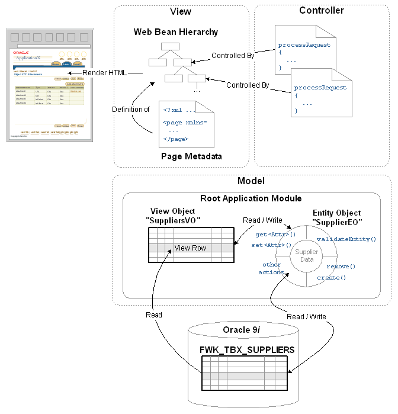

Page基础
在浏览器看来，OA Framework页面与其它web页面一样，被渲染为HTML。
在中间层中，页面是由内存中层级分布的Javabeans组成——非常像传统的Java客户端UI。每个UI构件，比如按钮、表格、tab、商标图像等，被渲染为页面中对应的构件。
浏览器向一个页面发出请求时，OA Framework读取页面定义的元数据创建web bean结构。每个bean与一个UI控制器关联，OA Framework调用你编写的代码初始化页面。页面处理完成后，OA Framework将web bean结构交给UIX框架处理以生成发送给浏览器的HTML。
当浏览器发出一个表单提请求时，OA Framework重新创建bean及其层次结构（只在必要的时候才重新创建，通常这些bean是被缓存的，只在特定的情况下才重新创建），然后调用为page bean编写的事件处理代码。当页面处理完成后，页面HTML重新生成并发送给浏览器。
OA Framework MVC架构：

模型Model
模型包括下层的数据和应用业务逻辑。它也提花了现实世界对象和应用服务间的抽像层。
应用模块Application Modules
BC4j应用模块本质上是一个容器，它管理和提供对“相关“BC4J模型对象的访问。这里的“相关”指的是同一个任务中的参与者 …